A little sun.
A world below.
Your aquarium has its own daylight. AquaLight puts its colour, brightness and daily rhythm in your hands.
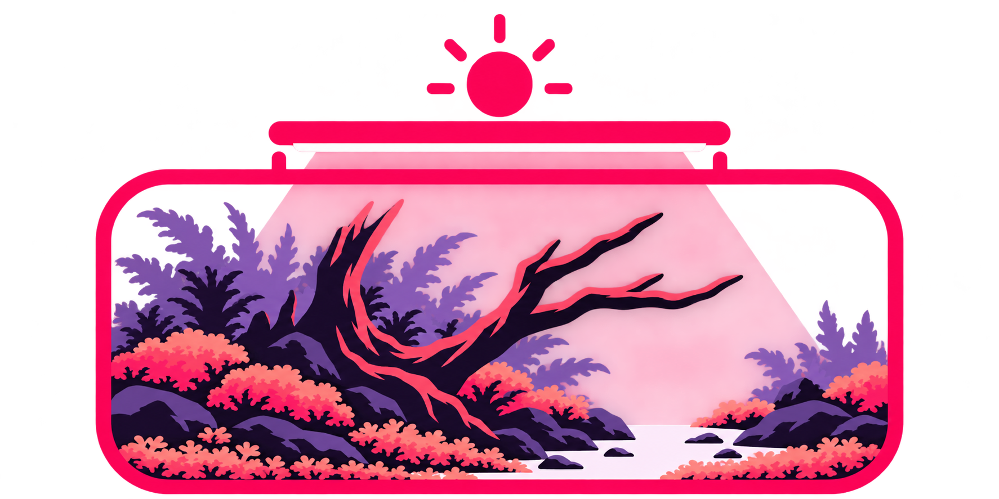
Give your aquarium
its own sun.
A little underwater forest, brought to life by light. The sun, LED bar and illuminated scape make the purpose clear: aquarium light control.
The sun
The lamp supplies the aquarium’s daylight. The sun symbol expresses that role; it is a brand device, not a live on/off indicator.
The forest
Branching driftwood, layered planting and an open sand path turn a generic tank into a landscape worth caring for.
The rhythm
Brightness, colour and daily schedules support the world below. Communication stays calm, clear and practical.
One forest.
Every scale.
The illustrated primary logo carries the full scape. The vector companion keeps the tank, lamp, sun and branching root readable in smaller spaces.
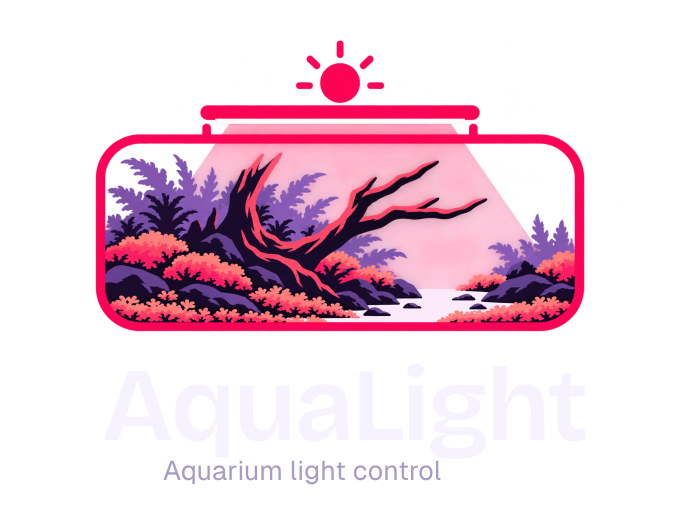
Primary / full-colour scape / dark backgrounds
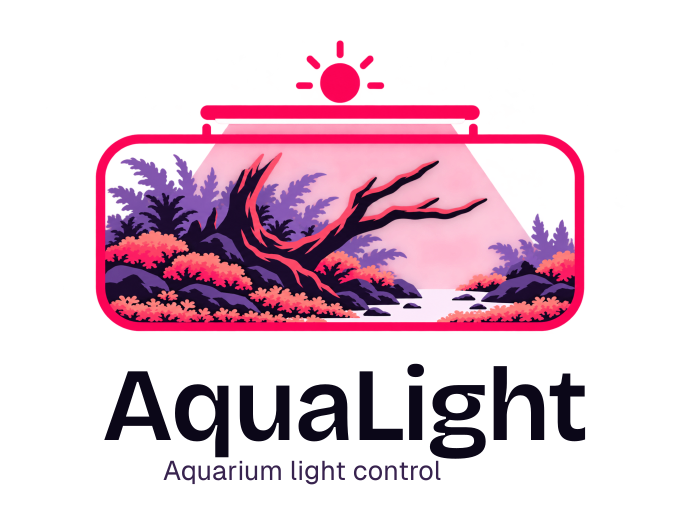
Primary / dark lettering / light backgrounds
Horizontal / compact vector mark with descriptor
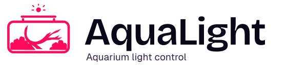
Horizontal / light-background version
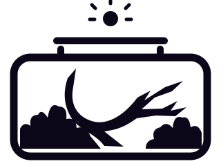
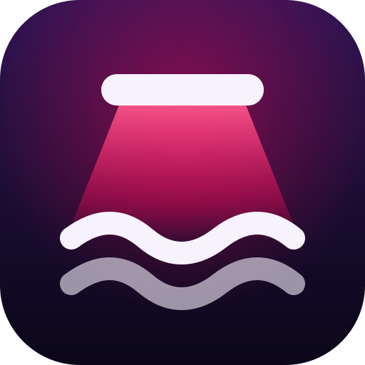
Keep the landscape.
Use the primary logo at 280px wide or above. Use the horizontal logo from 180px, the compact standalone emblem from 64px, and the micro tile at 24–48px. At small sizes, retain the root and planting masses; remove fine detail.
Give it room.
Leave at least one sun diameter of clear space around the visible artwork. Keep the proportions and supplied colours. Place it on quiet midnight or pearl surfaces. Use the single-colour emblem when only one ink is available.
The primary SVG contains a high-resolution PNG illustration and outlined vector lettering. Compact emblems, horizontal logos and wordmarks are fully vector. Use the vector companion for very large print, engraving or embroidery.
After dark.
Full of life.
Midnight gives the aquarium room to glow. Pink signals interaction. Coral and lilac add the layered richness of the selected scape.
#0B0718
Canvas
#FF0A5C
Action
#FF7C91
Light on foliage
#AF8DDD
Planted depth
#F7F2FF
Text / sand
#A69CC4
Supporting text
In the app
Keep most of the screen midnight and deep-water surfaces. Use pink for primary actions and active states. Spectrum colours show the light’s actual output. Reserve green for connected status.
In brand artwork
Use coral and lilac for depth around the dark driftwood. Pearl becomes the open sand path. Preserve a strong dark-to-light hierarchy and avoid adding glows to the logo.
For small text, use pearl on midnight and midnight on pink. Pearl on pink is reserved for large text and graphical marks. Use #FF3D7F for pink text on midnight. Always pair status colours with text or a symbol.
Organic character.
Everyday clarity.
Bricolage Grotesque brings warmth to the signature. Geist Sans keeps controls and changing values easy to scan.
Daylight.
Your way.
Display 40–92px · Titles 20–40px
Tracking −0.025em · Line height 1.02
Your lights are connected.
Sunset begins at 6:30 pm.
Body 15px · Controls 13–16px · Metadata 12px
Tabular numerals for brightness and times.
All exported wordmarks use outlined lettering, so they do not need installed fonts. Local web fonts and their open-source licences are included for live text and offline use.
A forest in your pocket.
The same branching root and open channel remain inside the icon. Maskable artwork includes extra space for circular and rounded-square crops.
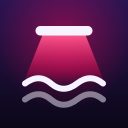
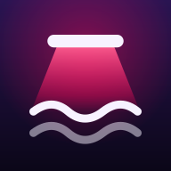
Included: 32, 48, 64, 128, 180, 192, 256, 512 and 1024px PNGs, SVG master, Apple touch icon and a 512px maskable icon. The app uses the micro mark in its header.
Calm controls.
Living colour.
The identity belongs in the signature, empty states and introductory artwork. Everyday controls stay uncluttered, with the actual light colour doing the work.
Sunday · Driftwood forest
Sunset is
under way.
Light as a language.
Cards: 22px corners and quiet borders. Controls: 16px corners or pills. Motion: gentle 300ms colour changes, with reduced-motion support.
Contour texture stays faint behind hero areas. Daylight beams belong in brand artwork, not behind dense text. Channel colours and connection signals retain their functional meaning.
This preview illustrates the identity. Its schedule and values are examples. Hardware limitations still belong in the app’s relevant instructions.
A little poetry.
Plenty of clarity.
Use expressive language for introductions, then direct words for controls, states and errors. Never promise that a command was verified when the light cannot report its state.
Daylight for your
underwater world.
A little sun. A world below.
Descriptor: Aquarium light control
“Add your first light.”
“Light disconnected. Move closer and try again.”
“Schedule sent to your light.”
“Keep AquaLight open to return to your schedule.”
A world beyond
the app icon.
Finished layouts for square posts, vertical stories, link previews and wide banners. SVG masters use outlined type; matching PNGs are ready to upload.
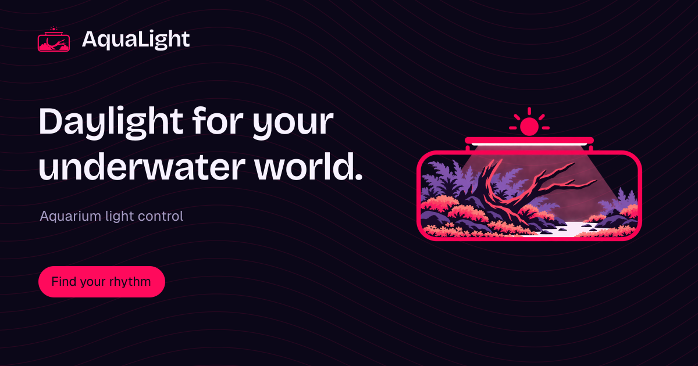
Link preview / 1200 × 630
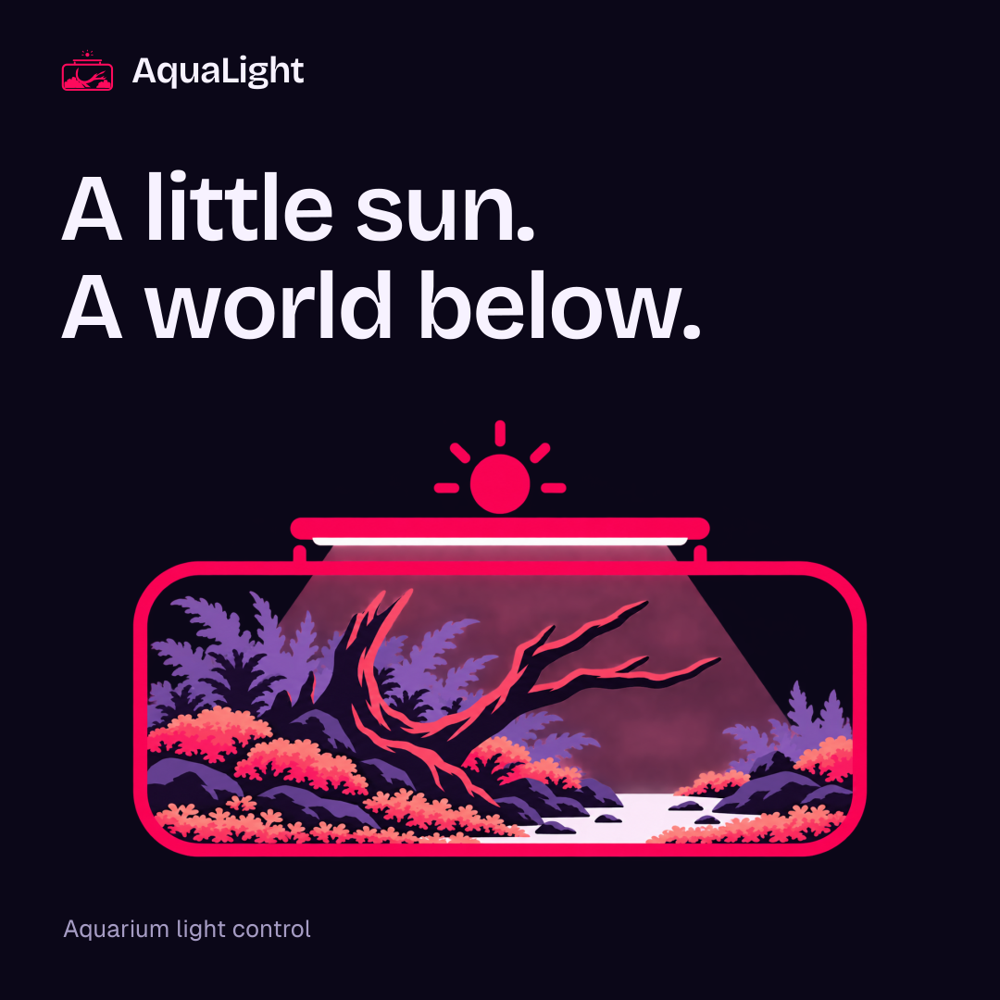
Square / 1080 × 1080
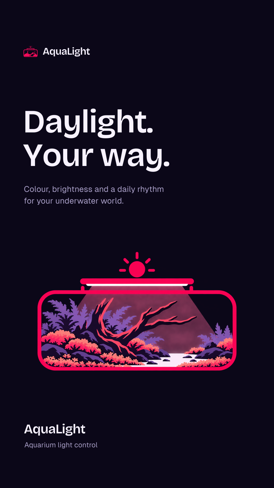
Story / 1080 × 1920 / generous top and bottom margins
Everything together.
Logos, icons, artwork, social assets, tokens, fonts, licences and this guide. Previous concept boards stay in their own folders for reference.